Chapter 8. The Most Horrible, Dreadful, Disgusting, Repulsive Creature That Ever Walked the Earth - Part 1 of 1
"Maybe we should go home now," I told Michael and Ryan. "We have candy.""Go home?" Michael said.
"Are you crazy? We haven't been to Mrs. Patty's house yet. She has more candy than anyone in town."
"But what if she chops our heads off?" I asked. "Stuff like that happens all the time, you know.""She's not going to chop our heads off," Ryan said.
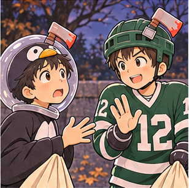
"Your friend Billy doesn't know what he's talking about.""Yeah," Michael said, "and Mrs. Patty told us over and over again that we have to trick-or-treat at her house. She might chop off our heads if we don't show up."
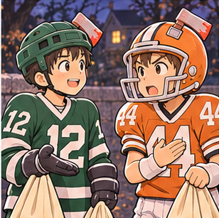
Good point. Michael really should be in the program.We kept walking down the street.
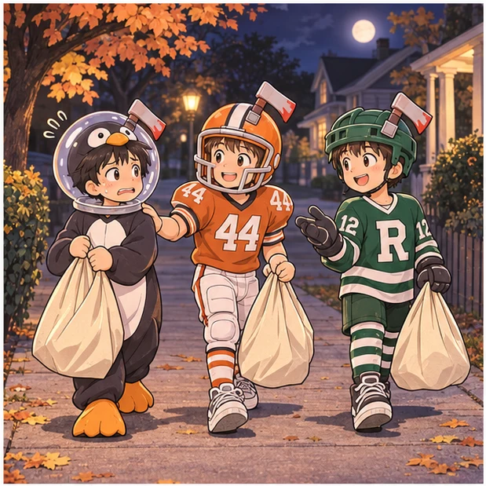
It was dark now, and . I was looking all around, just in case the real Halloween Monster jumped out from behind a wall. "Do you think Mrs. Patty's headless husband, Marvin, still lives with her?" I asked the guys.
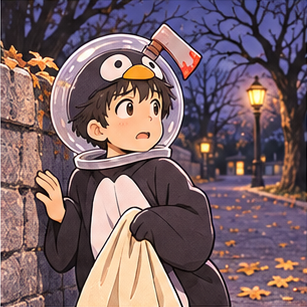
"Ghosts have to live somewhere," Michael said. "They're just like people, except they're dead.""I feel sorry for ghosts," said Ryan.
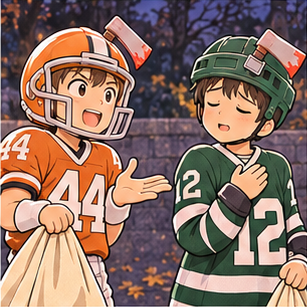
"They're like homeless dead people."We turned the corner onto Norman Road, where Mrs. Patty lives. That's when I saw the most , , , that ever walked the Earth.
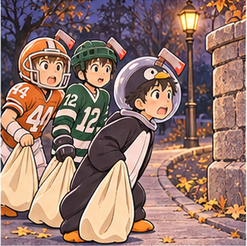
It was Andrea Young! She was with her little friend Emily, and they were dressed in their girly . Emily's mom must have that dumb queen outfit together again.
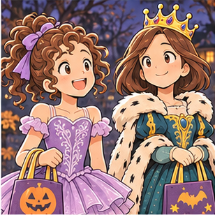
"What are you two doing here?" I asked."We're trick-or-treating, dumbhead," Andrea said. "Just like you."
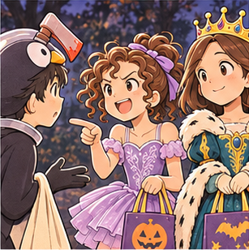
Andrea and Emily said they were heading for Mrs. Patty's house. I didn't want to walk with them, but it did feel safer with five of us walking together.Finally we got to 176 Norman Road.
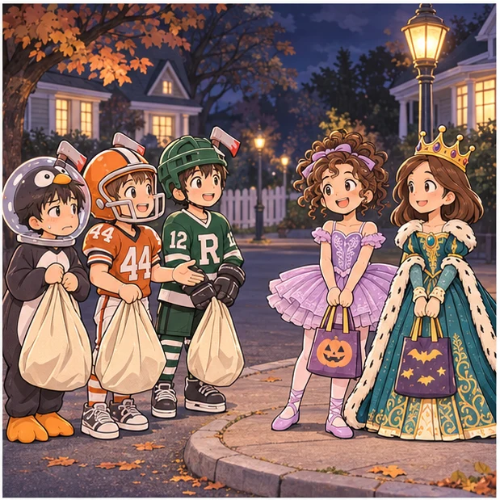
It was a big house. It looked really old, like one of those houses in the movies. There was an on the outside and some dead trees by the .
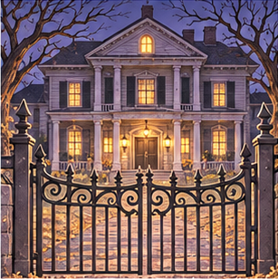
"Wow!" Andrea said. "I didn't know school secretaries lived in mansions."When we got closer, we through the gate and saw Mrs. Patty's Halloween .
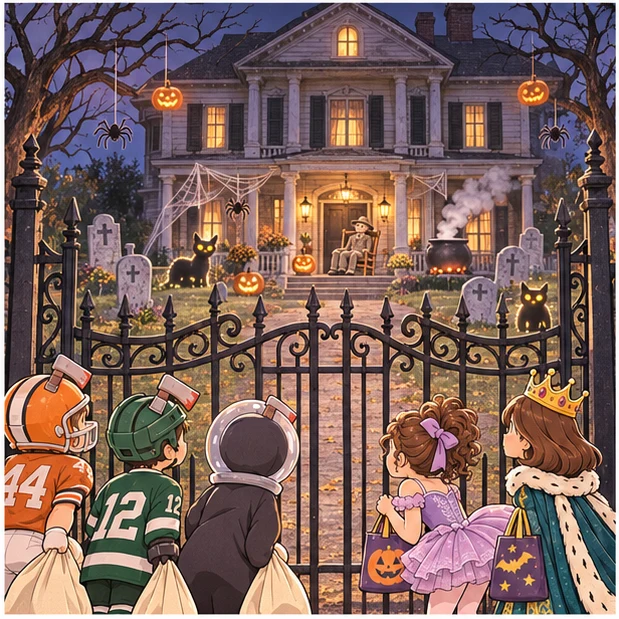
There were sticking out of the lawn. A foot was of a window. There were with evil faces, spiders hanging from strings, and cats with eyes that lit up.
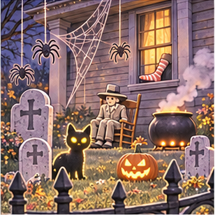
Smoke was coming out of a big pot. Spooky music was coming out of speakers. There was a sitting on a chair on the front porch.
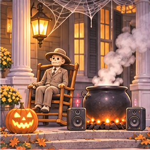
(I hope it was a , anyway. If that thing moved, I decided, I was going to make a run for it.)"This place is ," said Emily.
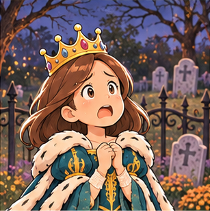
Andrea . "Mrs. Patty sure when it comes to Hallo—"But she didn't get to finish her sentence, because suddenly the front gate open.
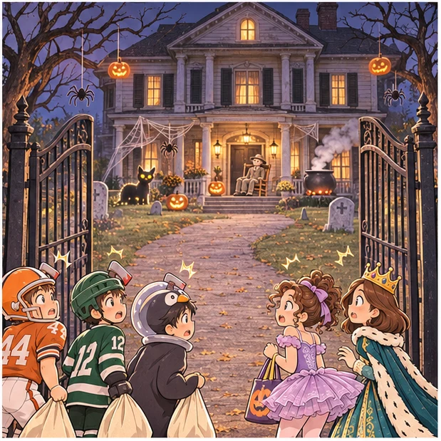
Nobody even touched it or anything."Come inside. . . ," said a weird man's voice. "If you . . . ."
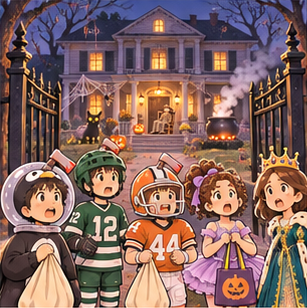